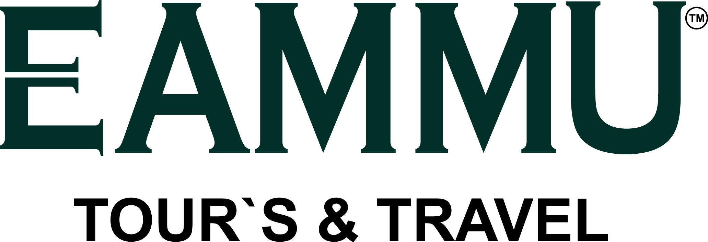

Schengen Visa Application Requirements
A Schengen visa is a type of visa that allows you to travel freely within the Schengen Area, which is a group of 26 European countries that have abolished border controls between them. The Schengen Area includes countries such as France, Germany, Italy, Spain, and many others.
To apply for a Schengen visa, you will need to provide the following documents:
What Documents are Required when you Applying for a Schengen Visa?
The following list of documents are required for any short-term Schengen visa application:
Visa application form Fully completed and signed.
Two recently taken photos must be attached. Both photos must be taken within the last three months, according to the visa photo requirements
A valid passport. Not older than 10 years, and it should valid for at least three more months beyond the date you plan to leave the Schengen area. Older passports with visas on them (if you have any).
Round trip flight itineraryIt must include dates and flight numbers specifying entry and exit from the Schengen area. You can use the visa consultation services like this one. These guys can handle most of your visa requirements, such as flight itineraries and hotel reservations, along with free consultation over email.
Travel insurance policy. A document that proves you have travel health insurance for the whole Schengen territory, with a minimum coverage of 30,000 euros in case of any medical emergency such as illnesses, accidents and even repatriation in case of death. The Insurance policy can easily be purchased online from Europ Assistance.
Proof of accommodation. A document that shows where you will be accommodated throughout your stay in Schengen. This can be one of the following:
A hotel/hostel booking.
A rental agreement.
A letter of invitation from a host at whose house you will be staying.
Proof of financial means. Evidence that you have enough money to support yourself financially throughout your stay in the Schengen. This can be one of the following:
Bank account statement – that shows you have enough money in your account for the trip. The statement shall be no older than 3 months.
Sponsorship Letter – by another person that confirms they will be financially supporting your trip to the Schengen. In order for this letter to be valid, it must be accompanied by a bank statement of the sponsor, no older than three months.
A combination of your bank account statement and a letter of sponsorship.
Proof of paid visa fee. €80 for adults and €45 for children from 6 to 12 years old.
Get Your dummy tickets and hotel booking for visa. Free visa consultany by Eammu Tours & Travel
how to write Schengen Cover letter. Schengen Cover lettr Pdf file You can edit this file by Microsoft word.
How to Write Travel itinerary.

Read More About itinerary..............